Z basis · measured
Projects & Experience
|Project⟩ · |Experience⟩
A quantum circuit explorer for my projects, work experience, and certificates. You can scroll down if you would like to see them all.
- q1 Algorithms · Optimization · Information
- q2 Physics: Transport · Sensing
- c Engineering foundation (classical register)
- outlined = project
- filled + role = job or internship
- cut corners = certificate
- PUBLISHED = also appeared as a paper
ProjectsResearch and build work, newest last.5
-
Quantum Portfolio Diversification via QAOA
This project is a literature review and reproduction of Portfolio Asset Identification using Graph Algorithms on a Quantum Annealer by Angad Kalra, Faisal Qureshi, and Michael Tisi. The original work formulates portfolio asset selection as a Maximum Clique Problem (MCP) and solves it using a D-Wave quantum annealer. I reproduced the MCP formulation and implemented it using QAOA on a gate-based quantum simulator, including its QUBO and Ising Hamiltonian representations.
To address the scalability of solving larger correlation graphs directly, I used Louvain community detection to divide the graph into smaller communities before applying the optimization. The resulting approach was used to identify maximum cliques within the larger asset-correlation network while studying how graph decomposition affects the QAOA-based solution.
Tools / Concepts: PennyLane · QAOA · QUBO · Ising Hamiltonian · Maximum Clique Problem · Louvain Community Detection · NetworkX · yFinance · NumPy · Matplotlib
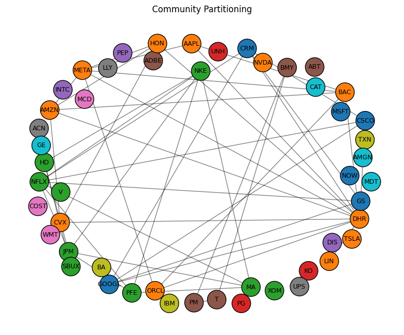
The asset-correlation graph after Louvain clustering. 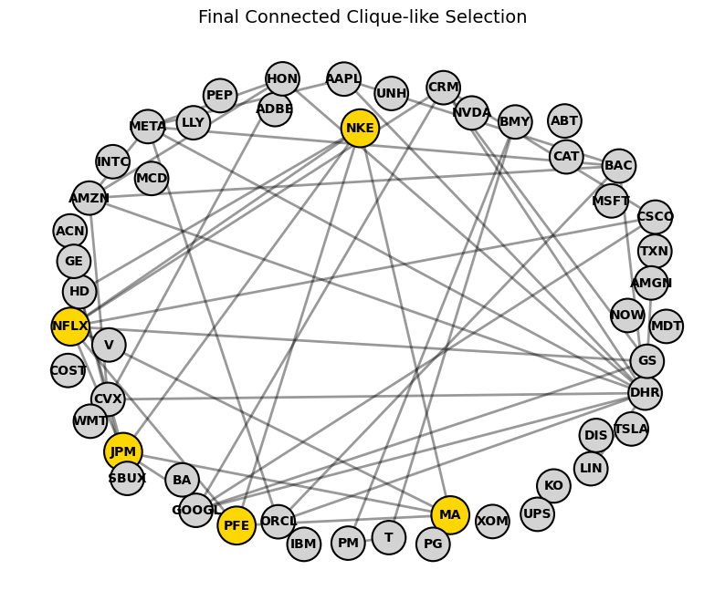
The asset-correlation graph with maximum cliques highlighted. -
Specious Random Number Generator & Tester
This project studies the limitations of conventional randomness testing for Quantum Random Number Generators (QRNGs) through a review of existing and newer testing methods. I examined classical suites such as NIST SP 800-22 and Dieharder, along with newer approaches including specious-randomness detection, Transformer-based classifiers, TuRiNG, PractRand, and TestU01. A key limitation is that many classical tests focus on statistical uniformity and independence, allowing deliberately structured sequences to pass even when they are predictable or highly compressible. QRNGs also introduce practical issues such as non-IID behaviour, hardware drift, and extractor-level effects that are not fully captured by output-only statistical tests.
As a practical reproduction, I implemented a specious random number generator by constructing and shuffling all possible N-bit patterns, then concatenating them into a test stream. I then implemented the corresponding double-sided χ² test, which detects both unusually uneven distributions and the suspiciously low χ² values produced by artificially uniform n-gram frequencies. The generated sequence passed the NIST tests while being detected by the modified test across N = 1–16, demonstrating the blind spot that motivated the newer testing approach.
Tools / Concepts: Python · SciPy · NumPy · Jupyter · χ² Testing · n-Gram Analysis · Statistical Randomness Testing · QRNG · NIST SP 800-22 · Dieharder · Specious Randomness
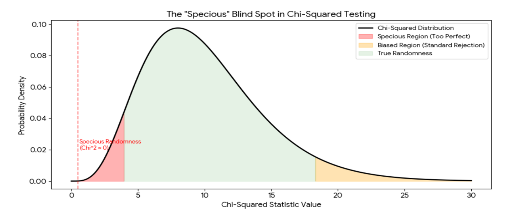
The χ² statistic against both critical bounds. -
Decoherence-Assisted Quantum Transport (ENAQT)
This project studies Environment-Assisted Quantum Transport (ENAQT), a counterintuitive phenomenon in which a controlled amount of environmental noise can improve the transport of quantum excitations. Inspired by transport mechanisms observed in biological light-harvesting systems, the project investigates how static disorder and quantum interference can localize an excitation, while moderate dephasing can suppress destructive interference and improve the probability of reaching a target site. The goal is to understand how a process usually treated as a source of decoherence can instead be used as a resource for quantum transport.
A realistic open-system simulation models excitation transport on FMO-inspired networks while including static energetic disorder, site-to-site coupling variations, dephasing, relaxation, radiative loss, and trapping at the target site. By sweeping the environmental parameters and averaging over disorder realizations, the simulation evaluates transfer efficiency, transfer time, survival probability, and transport robustness, allowing the ENAQT regime to be identified rather than assuming idealized dynamics. The study compares coherent, weakly dephased, and strongly dephased regimes to determine when noise improves transport and when it becomes detrimental.
Tools / Concepts: Python · QuTiP · NumPy · SciPy · Open Quantum Systems · Lindblad Master Equation · ENAQT · FMO Networks · Dephasing · Static Disorder · Quantum Transport
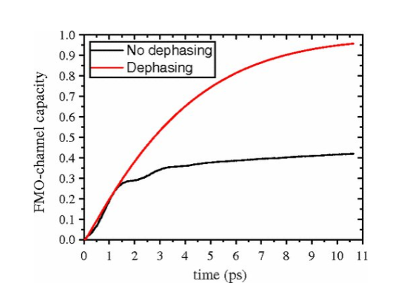
Improved channel capacity compared to no noise -
Biological Imaging using Squeezed Light
This project investigates how squeezed light can be used to improve optical measurements in biological imaging, where increasing illumination is often limited by photodamage and sample viability. The project examines quantum-enhanced sensing through the reduction of measurement noise below the standard shot-noise limit, allowing improved sensitivity without relying solely on higher optical power. The study focuses on how non-classical light can provide an advantage when the available photon budget is constrained.
The work explores squeezed-light implementations for several imaging and spectroscopy techniques, including a Mach–Zehnder interferometer, stimulated Raman scattering (SRS), and photothermal spectroscopy. The analysis compares squeezed and conventional coherent illumination in terms of measurement noise and sensitivity, with particular attention to the trade-off between quantum-noise reduction, optical power, and biological sample constraints.
Tools / Concepts: Python · QuTiP · NumPy · Quantum Sensing · Squeezed States · Shot-Noise Limit · Mach–Zehnder Interferometry · Stimulated Raman Scattering · Photothermal Spectroscopy
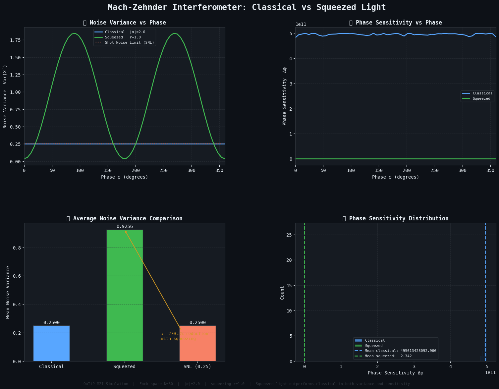
Squeezed-input Mach–Zehnder, noise pushed below the shot-noise limit. -
Quantum solution for Optimized Transport Logistics with Impact Analysis
Q-FLUX is a fleet-logistics system built around a server-side digital twin. The core optimization decision is which truck should carry which order. That decision is formulated as a QUBO and solved with an annealer. The rest of the pipeline is classical: graph routing, eligibility filtering, feasibility repair, stop sequencing, fuel planning, disruption analysis, and benchmarking.
The system does not build one giant QUBO for the full fleet. Orders are split into zones, each zone gets a small candidate-truck pool, impossible truck-order pairs are removed, and the remaining assignment problem is solved independently.
When a disruption occurs, Q-FLUX does not automatically throw away the whole plan. It propagates the consequences through the road graph, identifies the affected orders, builds an isolated zone, and runs the same optimization pipeline again only for that zone.
Tools / Concepts: Python · NetworkX · QUBO · Quantum Annealing · Simulated Annealing · D-Wave Ocean · FastAPI · Digital Twin · Vehicle Routing · Constraint Optimization · OR-Tools · 2-opt
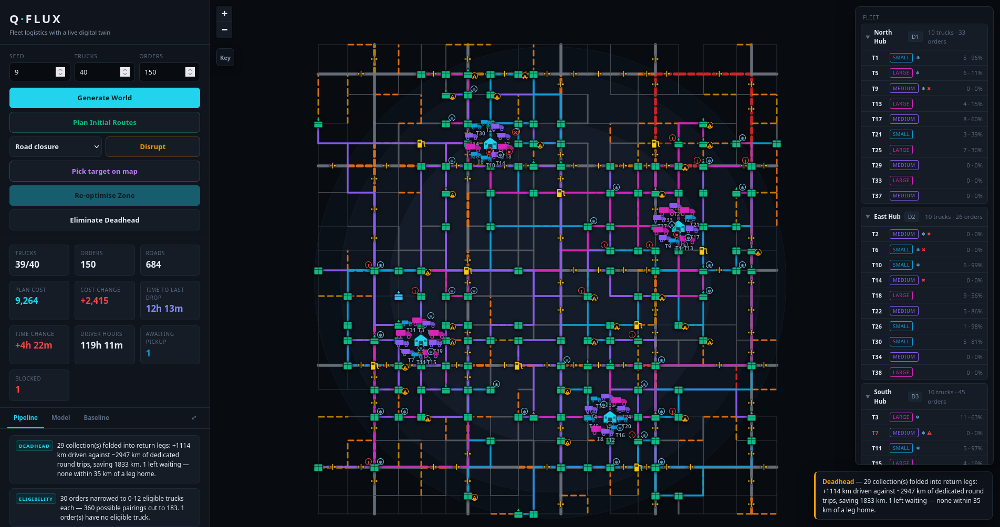
Qflux software with digital twin simulation and options to optimize and create disruptions -
Quantum-Assisted Inverse Design of 2D Tunnel Transistors
This ongoing project investigates the use of the Variational Quantum Linear Solver (VQLS) within a Non-Equilibrium Green's Function (NEGF) framework for nanoscale transistor simulation, with a focus on Tunnel Field-Effect Transistors (TFETs). In the NEGF method, calculating the retarded Green's function requires solving a large linear system involving the device Hamiltonian and self-energy terms. The project explores how this linear solve can be reformulated for a variational quantum algorithm and integrated into the wider quantum-transport workflow.
The work focuses on the practical challenges of applying VQLS to the retarded Green's function, including matrix construction, quantum state preparation, circuit depth, variational optimization, numerical accuracy, and the effect of noise on the obtained solution. The eventual goal is to evaluate whether a quantum linear-solver approach can be useful within NEGF-based TFET modelling, while comparing its accuracy and computational requirements with conventional numerical solvers.
Tools / Concepts: Python · VQLS · NEGF · Retarded Green's Function · Quantum Linear Solvers · Quantum Transport · TFETs · Hamiltonian Matrices · Self-Energies · Variational Quantum Algorithms
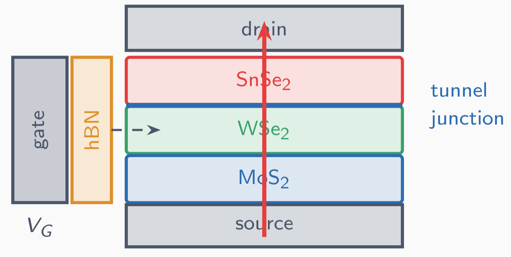
Standard TFET model design
Role experienceJobs and internships.2
-
Electrical Design Engineer, Thermon Pvt Inc
Worked as an Electrical Design Engineer on industrial heat-tracing projects, preparing and updating engineering design packages based on project requirements and design changes. Managed a high-volume workflow of 40+ engineering packages per month while maintaining approximately 90% accuracy and on-time delivery.
Coordinated technical execution for international projects involving clients and teams across Canada and Houston, ensuring that design updates and project requirements were incorporated correctly into the engineering deliverables. The role provided practical experience in electrical design, engineering documentation, quality control, and working within structured project workflows.
Tools / Concepts: Electrical Design · Heat Tracing · Engineering Documentation · Design Updates · Quality Control · Technical Coordination · Industrial Projects
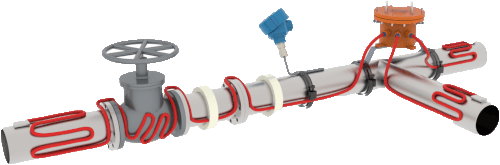
A heat-tracing design package. 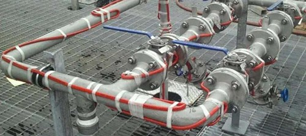
A heat traced pipe. -
Quantum Research Intern, Quantum AI Global
Worked on quantum networking simulation and the development of QNTSim, with a focus on making quantum communication models both realistic and understandable. Contributed to the associated learning module by rebuilding simulation-based chapters and developing interactive tools for QKD and quantum teleportation. Implemented and analysed BB84-based simulations with eavesdropping scenarios, and studied a broader attack landscape including intercept-resend, Breidbart, photon-number-splitting, detector blinding, and Trojan-horse attacks.
Developed realistic quantum-network simulations using a discrete-event simulator, including channel noise, source and detector imperfections, and configurable eavesdropper behaviour. Built analysis workflows using metrics such as QBER, per-basis error rates, mutual information, and secure key rate, and contributed to interactive simulators with parameter sweeps and result explanations. The internship also involved testing simulator behaviour, identifying implementation issues, and improving the learning experience through structured content, accessibility features, and interactive documentation.
Tools / Concepts: Python · Discrete-Event Simulation · QNTSim · QKD · Quantum Networking · BB84 · Quantum Teleportation · QBER · Mutual Information · Secret Key Rate · Eavesdropping · Channel Noise · Device Imperfections
Detailed methods and internal tooling are confidential under NDA.
CertificatesProgrammes completed, and what they certify.1
-
Qiskit Global Summer School 2026: Quantum Excellence
Completed the Qiskit Global Summer School 2026 and was awarded the Quantum Excellence badge on the advanced track, which is issued for completing the lecture series together with the graded lab work rather than for attendance alone. The programme sits on the q1 register: its material is quantum algorithms and quantum information rather than device physics.
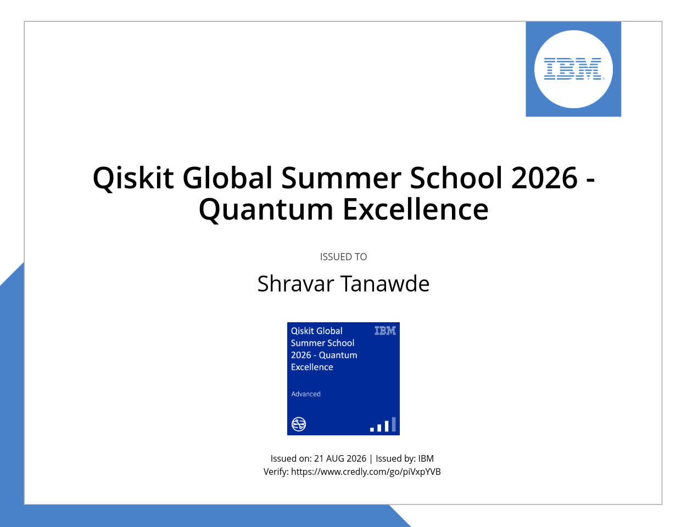
Issued by IBM, 21 August 2026 · verifiable on Credly.
MiscEarlier engineering, before the pivot.2
-
Suntracker on Rocker-Bogie Mechanism
Designed and built a mobile solar-powered all-terrain robot using a rocker-bogie suspension and a dual-axis sun-tracking system. The rocker-bogie mechanism was designed through geometric calculations and CAD modelling to maintain stability while traversing uneven terrain and climbing obstacles, while a three-gear differential mechanism was added to reduce platform tilt during rocker movement. The completed prototype was tested on rough terrain and demonstrated slope climbing up to 45° and obstacle traversal over steps up to 15 cm.
The solar subsystem uses light-dependent resistors (LDRs) and two perpendicular servo motors to continuously orient the panel toward the direction of maximum light intensity. The robot was controlled through an Android Bluetooth joystick, with the control system mapping joystick coordinates to individual wheel speeds. Testing showed that the dual-axis tracker produced 38.96% higher average power than a stationary panel, demonstrating the benefit of combining mobile robotics with active solar tracking.
Project was presented at the International Conference on Advances in Mechanical Engineering (ICAME 2020) and published in the Advances in Mechanical Engineering journal by Springer.
Tools / Concepts: CAD Modelling · Mechanical Design · Rocker-Bogie Mechanism · Differential Gear Mechanism · Dual-Axis Sun Tracking · LDR Sensors · Servo Motors · Bluetooth Control · Mobile Robotics · Solar Energy
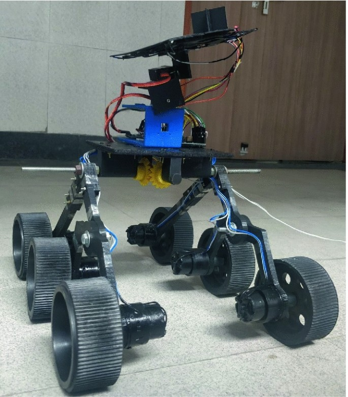
The rocker-bogie chassis with the tracking panel mounted. 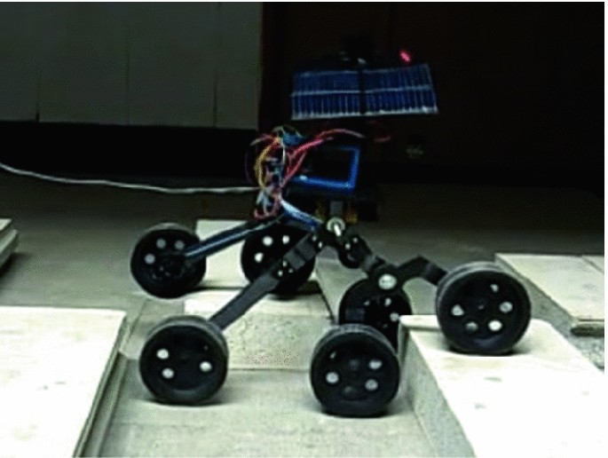
The rocker-bogie chassis moving over a rough terrain. -
Auto Customer-Review Categorization
Developed an Aspect-Based Sentiment Analysis (ABSA) system for analysing restaurant customer reviews by identifying what customers are talking about and the sentiment associated with each aspect. Rather than assigning a single sentiment to an entire review, the system identifies entity–aspect pairs such as Food#Quality or Service#General and classifies the corresponding sentiment. As part of the project, multiple approaches were studied and compared for aspect detection and sentiment classification, including spaCy, Bi-LSTM, BERT, and Logistic Regression.
The final pipeline combined BERT for aspect category detection with a Bi-directional LSTM for sentiment classification, reaching 92.02% accuracy for the sentiment classifier. Constituency parsing using Stanford CoreNLP's Stanza library was added to separate sentences containing multiple aspects, while a speech-to-text component allowed spoken feedback to be processed by the same ABSA pipeline. The project also analysed the limitations of the different models, including class imbalance, contextual ambiguity, and the effect of preprocessing on sentiment interpretation.
Tools / Concepts: Python · NLP · BERT · Bi-LSTM · spaCy · Logistic Regression · Stanza · Word2Vec · GloVe · Aspect-Based Sentiment Analysis · Named Entity Recognition · Constituency Parsing · Speech-to-Text